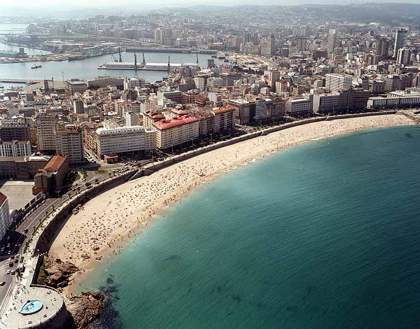
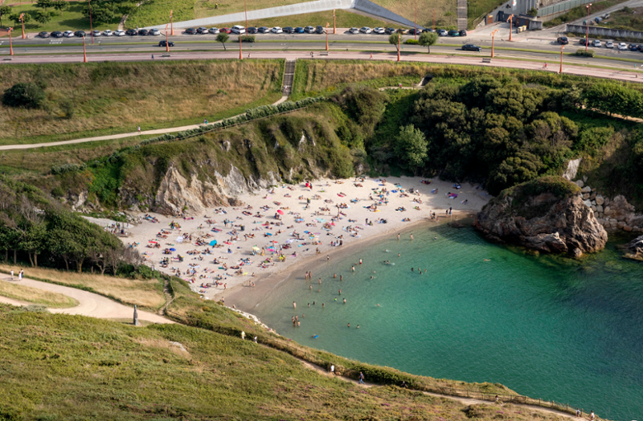
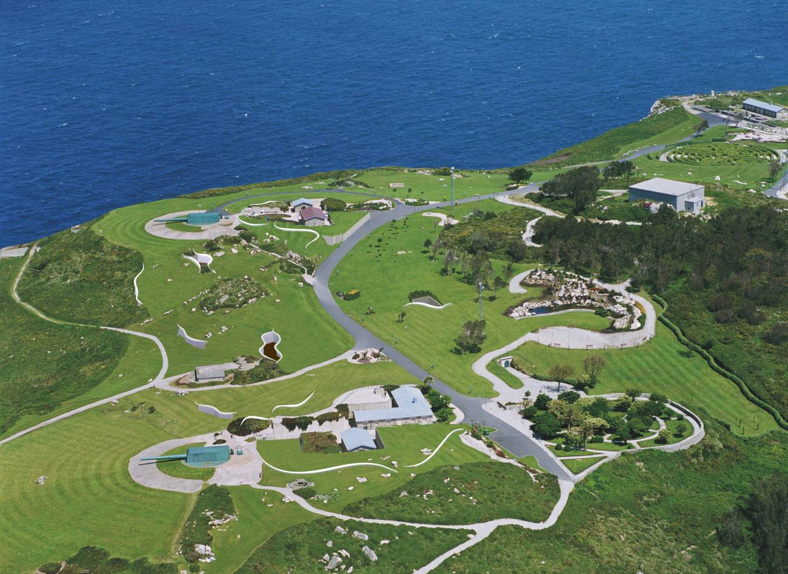

NATURALEZA

Con más de 13 kilómetros de longitud, el Paseo Marítimo de A Coruña es uno de los más largos de Europa. Rodea gran parte de la ciudad uniendo playas, acantilados y monumentos como la Torre de Hércules o el Castillo de San Antón. Ideal para caminar, ir en bicicleta.

A Coruña presume de tener playas urbanas de gran belleza y calidad. Las más conocidas son Riazor y Orzán, situadas junto al paseo marítimo, perfectas para el baño o practicar surf. También destacan San Amaro y As Lapas, más tranquilas y familiares.
El Mirador al Atlántico es un espacio natural frente al océano que invita a la calma y la contemplación. Desde este punto se puede disfrutar de vistas espectaculares del mar abierto, los acantilados y los paisajes del litoral coruñés. Es uno de los lugares más recomendables para ver el atardecer y sentir la fuerza del Atlántico en estado puro.

El Monte de San Pedro es uno de los mejores miradores de A Coruña. Antiguamente fue una zona militar defensiva, pero hoy es un gran parque ajardinado con vistas panorámicas al océano Atlántico y a la ciudad. Desde su cima se puede subir en el famoso ascensor panorámico acristalado y disfrutar de un paisaje impresionante al atardecer.